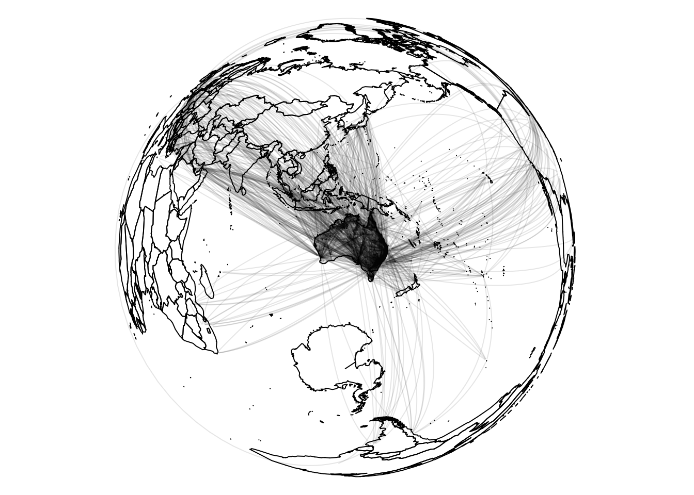

This is a demonstration of the use of the airports() and flightdistances() to generate a map of flights in and out of Australian airports.
library(sp)
library(dplyr)##
## Attaching package: 'dplyr'## The following objects are masked from 'package:stats':
##
## filter, lag## The following objects are masked from 'package:base':
##
## intersect, setdiff, setequal, unionlibrary(ozflights)
ap <- ozflights::airports()## Warning: Duplicated column names deduplicated: 'DEG' => 'DEG_1' [7], 'MIN'
## => 'MIN_1' [8], 'SEC' => 'SEC_1' [9], 'DIR' => 'DIR_1' [10], 'AIRPORT NAME'
## => 'AIRPORT NAME_1' [11], 'CODE' => 'CODE_1' [12], 'DEG' => 'DEG_2' [13],
## 'MIN' => 'MIN_2' [14], 'SEC' => 'SEC_2' [15], 'DIR' => 'DIR_2' [16], 'DEG'
## => 'DEG_3' [17], 'MIN' => 'MIN_3' [18], 'SEC' => 'SEC_3' [19], 'DIR' =>
## 'DIR_3' [20]## Parsed with column specification:
## cols(
## .default = col_integer(),
## `AIRPORT NAME` = col_character(),
## CODE = col_character(),
## DIR = col_character(),
## DIR_1 = col_character(),
## `AIRPORT NAME_1` = col_character(),
## CODE_1 = col_character(),
## DIR_2 = col_character(),
## DIR_3 = col_character()
## )## See spec(...) for full column specifications.fd <- ozflights::flightdistances()## Warning: Duplicated column names deduplicated: 'DEG' => 'DEG_1' [7], 'MIN'
## => 'MIN_1' [8], 'SEC' => 'SEC_1' [9], 'DIR' => 'DIR_1' [10], 'AIRPORT NAME'
## => 'AIRPORT NAME_1' [11], 'CODE' => 'CODE_1' [12], 'DEG' => 'DEG_2' [13],
## 'MIN' => 'MIN_2' [14], 'SEC' => 'SEC_2' [15], 'DIR' => 'DIR_2' [16], 'DEG'
## => 'DEG_3' [17], 'MIN' => 'MIN_3' [18], 'SEC' => 'SEC_3' [19], 'DIR' =>
## 'DIR_3' [20]## Parsed with column specification:
## cols(
## .default = col_integer(),
## `AIRPORT NAME` = col_character(),
## CODE = col_character(),
## DIR = col_character(),
## DIR_1 = col_character(),
## `AIRPORT NAME_1` = col_character(),
## CODE_1 = col_character(),
## DIR_2 = col_character(),
## DIR_3 = col_character()
## )
## See spec(...) for full column specifications.origin <- left_join(fd %>% dplyr::select(origin_code), ap, c("origin_code" = "airport_code"))
destination <- left_join(fd %>% dplyr::select(dest_code), ap, c("dest_code" = "airport_code"))
## build great circle paths
bad <- is.na(origin$long) | is.na(destination$long)
origin <- origin[!bad, ]
destination <- destination[!bad, ]
l <- vector("list", nrow(origin))
oll <- as.matrix(origin %>% dplyr::select(long, lat))
dll <- as.matrix(destination %>% dplyr::select(long, lat))
for (i in seq_along(l)) {
l[[i]] <- geosphere::gcIntermediate(oll[i, ], dll[i, ])
}
## get map data and define a projection
data("wrld_simpl", package = "maptools")
prj <- "+proj=laea +lon_0=130 +lat_0=-28 +datum=WGS84"
m <- sp::spTransform(wrld_simpl, prj)
par(mar = rep(0, 4))
plot(m)
purrr::walk(l, function(x) lines(rgdal::project(x, prj), col = rgb(0, 0, 0, 0.1)))